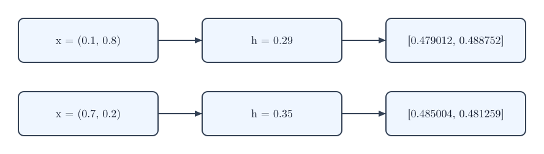
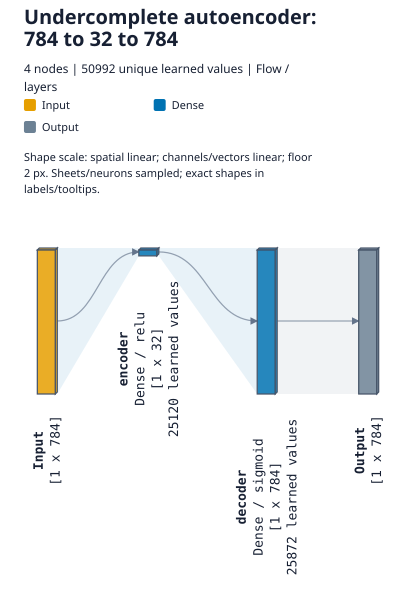
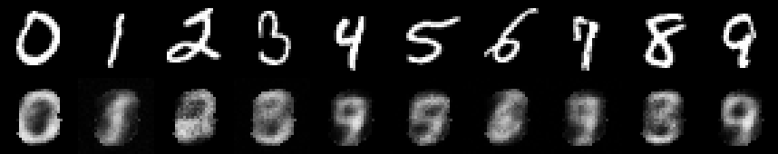

Undercomplete Autoencoders: Learning through a Bottleneck
Abstract
Compressing an observation into fewer coordinates loses information unless the data have structure. An undercomplete autoencoder learns an encoder and a decoder together, using the original observation as its reconstruction target. This report derives the mean squared reconstruction objective, checks a two-feature, one-coordinate example and every parameter derivative, then trains a 784–32–784 network on genuine 28 by 28 MNIST images. Validation reconstruction error selects the checkpoint; a separate held-out pool measures reconstruction against initial, black, fitting-mean, zero-code and shuffled-code baselines. The selected network obtains held-out MSE 0.05033, compared with 0.06780 for the fitting pixel mean. The example is deliberately small and does not establish a general-purpose image compressor.
The method
An observation \(x\in[0,1]^d\) is mapped to a code \(h\in\mathbb R^k\), where \(0<k<d\), and back to a reconstruction \(\hat x\). Here the encoder is ReLU and the decoder is sigmoid:
The two weight matrices are independent: \(W_e\in\mathbb R^{d\times k}\) and \(W_d\in\mathbb R^{k\times d}\). This gives \(2dk+k+d\) learned scalars. The code constrains the forward information path, but the decoder still stores learned information in its parameters. A real compression format would also specify quantization, bits, metadata and a decoder shared with the receiver; a reduction from 784 real values to 32 real values alone does not specify a bit rate.
#include <dm/dm.hpp>
int main() {
std::filesystem::create_directories("build");
dm::graphics::Diagram diagram(55, 1100);
diagram.node("x", {0, 0}, "Observation x\nd features")
.node("h", {5, 0}, "Code h\nk < d coordinates")
.node("r", {10, 0}, "Reconstruction\nd sigmoid outputs")
.node("loss", {5, -3}, "Mean squared error\nCompare reconstruction with x")
.edge("x", "h", "Affine + ReLU")
.edge("h", "r", "Affine + sigmoid")
.edge("x", "loss", "Target")
.edge("r", "loss", "Prediction")
.text({5, 2}, "Adam updates both affine maps using reconstruction gradients")
.save_svg("build/undercomplete_method.svg");
}
For a batch \(X\in\mathbb R^{N\times d}\), the objective averages over both observations and features:
Let \(D=2(\hat X-X)\odot\hat X\odot(1-\hat X)/(Nd)\), and \(E=(DW_d^\top)\odot\mathbf1\{XW_e+b_e>0\}\). The chain rule gives
At an encoder kink the ReLU derivative needs a convention; the numerical derivative check below uses strictly positive activations. A forward and reverse pass each require \(O(Ndk)\) arithmetic, with \(O(dk+N(d+k))\) parameter and activation storage. Training is nonconvex: neither Adam nor a low validation loss guarantees a globally optimal representation. The fitted function need not be a principal-component projection because both maps here are nonlinear.
The public dm::nn::models::UndercompleteAutoencoder now owns the reusable forward model. The caller
owns its ParameterStore, optimizer, batching, checkpoint selection and evaluation. Parameter names
remain encoder/W, encoder/b, decoder/W and decoder/b, preserving existing checkpoints.
A two-feature example, checked by hand
Take \(X=((0.1,0.8),(0.7,0.2))\), \(W_e=(0.3,0.2)^\top\), \(b_e=0.1\), \(W_d=(0.4,-0.5)\) and \(b_d=(-0.2,0.1)\). The two codes are 0.29 and 0.35. The first decoder logits are \((-0.084,-0.045)\), and the second are \((-0.06,-0.075)\). Applying the sigmoid gives all four predictions. The program compares their squared residuals and all seven analytic parameter derivatives with autograd.
#include <dm/dm.hpp>
int main() {
namespace n = dm::nn;
const auto type = n::DType::Float64;
n::ParameterStore p(17, type);
const auto x = n::tensor({.1, .8, .7, .2}, {2, 2}, type);
{
n::NoGradGuard guard;
n::models::UndercompleteAutoencoder(p, x, 2, 1);
p.set("encoder/W", n::tensor({.3, .2}, {2, 1}, type));
p.set("encoder/b", n::tensor({.1}, {1}, type));
p.set("decoder/W", n::tensor({.4, -.5}, {1, 2}, type));
p.set("decoder/b", n::tensor({-.2, .1}, {2}, type));
}
const auto result = n::models::UndercompleteAutoencoder(p, x, 2, 1);
const auto loss = n::mse(result.reconstruction, x);
const auto gradients = n::grad(loss, p.parameters());
const auto delta = (result.reconstruction - x) * result.reconstruction *
(1. - result.reconstruction) / 2.;
const auto encoder_delta = n::matmul(delta, n::transpose(p.at("decoder/W")));
const std::vector<n::Tensor> hand{
n::matmul(n::transpose(x), encoder_delta), n::sum(encoder_delta, {0}),
n::matmul(n::transpose(result.code), delta), n::sum(delta, {0})};
std::print("| parameter | autograd | chain rule | maximum absolute difference |\n|---|---|---|---:|\n");
for (std::size_t i = 0; i < gradients.size(); ++i) {
const double error = n::max(n::abs(gradients[i] - hand[i])).item();
if (error > 1e-13) return 1;
std::print("| {} | {} | {} | {:.2e} |\n", p.names()[i], gradients[i].values_str(), hand[i].values_str(), error);
}
std::print("\nCodes: {}. Reconstructions: {}. MSE: {:.9f}.\n",
result.code.values_str(), result.reconstruction.values_str(), loss.item());
if (n::max(n::abs(result.code - n::tensor({.29, .35}, {2, 1}, type))).item() > 1e-13) return 1;
std::filesystem::create_directories("build");
dm::graphics::Diagram d(60, 1050);
d.node("x0", {0, 0}, "x = (0.1, 0.8)").node("h0", {5, 0}, "h = 0.29")
.node("r0", {10, 0}, n::select(result.reconstruction, 0, 0).values_str())
.node("x1", {0, -2}, "x = (0.7, 0.2)").node("h1", {5, -2}, "h = 0.35")
.node("r1", {10, -2}, n::select(result.reconstruction, 0, 1).values_str())
.edge("x0", "h0").edge("h0", "r0").edge("x1", "h1").edge("h1", "r1")
.save_svg("build/undercomplete_toy.svg");
}| parameter | autograd | chain rule | maximum absolute difference |
|---|---|---|---|
| encoder/W | [[-0.0159698], [0.0250295]] | [[-0.0159698], [0.0250295]] | 3.47e-18 |
| encoder/b | [0.0100663] | [0.0100663] | 3.47e-18 |
| decoder/W | [[0.0043174, 0.00101075]] | [[0.0043174, 0.00101075]] | 1.73e-18 |
| decoder/b | [0.0204428, -0.00377837] | [0.0204428, -0.00377837] | 3.47e-18 |
Codes: [[0.29], [0.35]]. Reconstructions: [[0.479012, 0.488752], [0.485004, 0.481259]]. MSE: 0.091463826.

Checking the bottleneck restriction
Away from ReLU kinks, the input Jacobian factors through \(k\) coordinates. Its rank is at most \(k\), so a strict bottleneck cannot have the identity derivative on an open subset of \(\mathbb R^d\). This is a local smoothness statement, not a claim that it cannot memorize finitely many training images. A highly flexible network can still assign distinct codes to a finite sample. For the same two-feature model, this program checks the Jacobian determinant at three positive-activation inputs.
#include <dm/dm.hpp>
int main() {
namespace n = dm::nn;
const auto type = n::DType::Float64;
n::ParameterStore p(17, type);
{
n::NoGradGuard guard;
n::models::UndercompleteAutoencoder(p, n::zeros({1, 2}, type), 2, 1);
p.set("encoder/W", n::tensor({.3, .2}, {2, 1}, type));
p.set("encoder/b", n::tensor({.1}, {1}, type));
p.set("decoder/W", n::tensor({.4, -.5}, {1, 2}, type));
p.set("decoder/b", n::tensor({-.2, .1}, {2}, type));
}
std::print("| input | Jacobian rows | determinant |\n|---|---|---:|\n");
for (const auto values : std::vector<std::vector<double>>{{.1, .8}, {.7, .2}, {.4, .4}}) {
const auto x = n::from_vector(values, {2});
const auto jacobian = n::jacobian([&](const n::Tensor& input) {
return n::models::UndercompleteAutoencoder(p, input.reshape({1, 2}), 2, 1)
.reconstruction.reshape({2});
}, x);
const auto j = jacobian.to_vector<double>();
const double determinant = j[0] * j[3] - j[1] * j[2];
if (std::abs(determinant) > 1e-14) return 1;
std::print("| {} | {} | {:.2e} |\n", x.values_str(), jacobian.values_str(), determinant);
}
}| input | Jacobian rows | determinant |
|---|---|---|
| [0.1, 0.8] | [[0.0299471, 0.0199648], [-0.037481, -0.0249873]] | 0.00e+00 |
| [0.7, 0.2] | [[0.029973, 0.019982], [-0.0374473, -0.0249649]] | 0.00e+00 |
| [0.4, 0.4] | [[0.0299521, 0.019968], [-0.0374766, -0.0249844]] | 1.08e-19 |
The original MNIST architecture
The numerical study keeps the source example's 784–32–784 geometry, ReLU, sigmoid, independent weights and Adam learning rate 0.003. The executed architecture below uses a single-row shape probe, Flow style and layer detail. It displays 50,992 learned scalars, with inference recording enabled only for tracing. Tensor dimensions use the diagram defaults; this flow view does not display one glyph per pixel or code coordinate.
#include <dm/dm.hpp>
int main() {
namespace n = dm::nn;
std::filesystem::create_directories("build");
n::ParameterStore p(1471);
n::Module model([&](const n::Tensor& input) {
return n::models::UndercompleteAutoencoder(p, input).reconstruction;
}, "Undercomplete autoencoder: 784 to 32 to 784");
n::ModelPlotOptions options;
options.style = n::ModelPlotStyle::Flow;
options.detail = n::ModelPlotDetail::Layers;
const auto diagram = model.plot(n::zeros({1, 784}), options);
diagram.save_svg("build/undercomplete_architecture.svg");
if (p.count() != 50992 || diagram.parameter_count() != p.count()) return 1;
std::print("{} parameter tensors, {} learned scalars.\n", p.size(), p.count());
}4 parameter tensors, 50992 learned scalars.

Genuine MNIST: fit, select, then evaluate
prepare_example_data("mnist-assets", data_home()) acquires verified original MNIST and prepares
balanced pools of 1,000 fitting, 200 validation and 200 official test images. LoadSaliency checks
byte ranges, original row IDs, balanced classes and distinct pixel records across the pools. Pixels
are Float32 values divided by 255. Labels are used only to arrange the final gallery. No downloaded
checkpoint or Python preparation is needed.
The explicit loop below makes three passes over the fitting pool, minibatches of 32, seed 1483. The reported training loss averages each minibatch's pre-update MSE with its actual size, including the partial last minibatch. Validation MSE after each epoch selects the saved weights. The held-out pool is then scored using that selected checkpoint. These small pools and three epochs describe a quick demonstration, not a full MNIST benchmark.
#include <dm/dm.hpp>
int main() {
namespace n = dm::nn;
std::filesystem::create_directories("build");
const std::filesystem::path cache = dm::datasets::data_home();
dm::datasets::prepare_example_data("mnist-assets", cache.string());
const auto pools = n::models::LoadSaliency(cache / "saliency");
const auto fit = pools[0].images.reshape({1000, 784});
const auto validation = pools[1].images.reshape({200, 784});
const auto test = pools[2].images.reshape({200, 784});
n::ParameterStore p(1471);
{
n::NoGradGuard guard;
n::models::UndercompleteAutoencoder(p, n::zeros({1, 784}));
}
const auto initial_test = n::models::UndercompleteAutoencoder(p, test).reconstruction.detach();
const auto pixel_mean = n::mean(fit, {0}, true);
n::OptimizerConfig config;
config.kind = n::OptimizerKind::Adam;
n::Optimizer optimizer(p, .003, config);
n::BatchOrder batches(1000, 32, 1483);
const auto probe = n::take_rows(fit, {0, 1});
const auto first_gradients = n::grad(n::mse(n::models::UndercompleteAutoencoder(p, probe).reconstruction, probe), p.parameters());
std::print("| parameter | initial gradient L2 norm |\n|---|---:|\n");
for (std::size_t i = 0; i < first_gradients.size(); ++i) {
const double norm = n::sqrt(n::sum(n::square(first_gradients[i]))).item();
if (!std::isfinite(norm) || norm <= 0) return 1;
std::print("| {} | {:.7f} |\n", p.names()[i], norm);
}
double best = std::numeric_limits<double>::infinity();
int selected = 0;
std::vector<double> epochs, training, valid;
std::print("\n| epoch | fitting pre-update MSE | validation MSE |\n|---:|---:|---:|\n");
for (int epoch = 1; epoch <= 3; ++epoch) {
batches.begin_epoch();
double total = 0;
std::size_t seen = 0;
for (;;) {
const auto rows = batches.next();
if (rows.empty()) break;
const auto input = n::take_rows(fit, rows);
const auto output = n::models::UndercompleteAutoencoder(p, input);
const auto objective = n::mse(output.reconstruction, input);
const double value = objective.item();
if (!std::isfinite(value)) return 1;
total += value * rows.size();
seen += rows.size();
optimizer.minimize(objective);
}
n::NoGradGuard guard;
const double score = n::mse(n::models::UndercompleteAutoencoder(p, validation).reconstruction, validation).item();
if (seen != 1000 || !std::isfinite(score)) return 1;
if (score < best) {
best = score;
selected = epoch;
p.save("build/undercomplete_best.npz");
}
epochs.push_back(epoch);
training.push_back(total / seen);
valid.push_back(score);
std::print("| {} | {:.9f} | {:.9f} |\n", epoch, total / seen, score);
}
p.load("build/undercomplete_best.npz");
n::NoGradGuard guard;
const auto output = n::models::UndercompleteAutoencoder(p, test);
const auto zero_code = n::broadcast_to(n::sigmoid(p.at("decoder/b")), test.shape());
std::vector<std::int64_t> shifted;
for (int i = 0; i < 200; ++i) shifted.push_back((i + 1) % 200);
const auto shuffled = n::sigmoid(n::matmul(n::take_rows(output.code, shifted), p.at("decoder/W")) + p.at("decoder/b"));
const std::vector<std::pair<std::string, n::Tensor>> predictions{
{"initial network", initial_test}, {"black", n::zeros_like(test)},
{"fitting pixel mean", n::broadcast_to(pixel_mean, test.shape())},
{"selected autoencoder", output.reconstruction}, {"zero code", zero_code}, {"cyclically shuffled codes", shuffled}};
std::print("\nSelected epoch: {}. Validation MSE: {:.9f}.\n\n| held-out predictor | MSE over 200 images |\n|---|---:|\n", selected, best);
for (const auto& [name, prediction] : predictions)
std::print("| {} | {:.9f} |\n", name, n::mse(prediction, test).item());
n::save_npz("build/undercomplete_results.npz", {{"test_input", test}, {"test_reconstruction", output.reconstruction},
{"test_code", output.code}, {"test_labels", pools[2].labels}, {"test_ids", pools[2].source},
{"fit_ids", pools[0].source}, {"validation_ids", pools[1].source},
{"pixel_mean", pixel_mean}, {"initial_test", initial_test}, {"shuffled_test", shuffled}});
auto plot = dm::graphics::RPlot::create();
plot.lines(epochs, training, "Fitting, pre-update", {37, 99, 235}, 2.)
.lines(epochs, valid, "Validation, post-epoch", {220, 38, 38}, 2.)
.x_label("epoch").y_label("mean squared pixel error").title("Three epochs of Adam, learning rate 0.003")
.save_svg("build/undercomplete_learning.svg");
}| parameter | initial gradient L2 norm |
|---|---|
| encoder/W | 0.0206432 |
| encoder/b | 0.0018561 |
| decoder/W | 0.0203198 |
| decoder/b | 0.0076418 |
| epoch | fitting pre-update MSE | validation MSE |
|---|---|---|
| 1 | 0.109698705 | 0.066644996 |
| 2 | 0.065107134 | 0.055756476 |
| 3 | 0.055117222 | 0.048601795 |
Selected epoch: 3. Validation MSE: 0.048601795.
| held-out predictor | MSE over 200 images |
|---|---|
| initial network | 0.232573360 |
| black | 0.115653820 |
| fitting pixel mean | 0.067798078 |
| selected autoencoder | 0.050325811 |
| zero code | 0.220418379 |
| cyclically shuffled codes | 0.068210378 |

The fitting pixel mean is the squared-error-optimal constant image. It is a stronger baseline than black for these sparse handwritten digits. A zero code measures what the decoder bias alone supplies; cyclically shifting the 200 codes keeps their marginal distribution but destroys alignment with their own targets. Neither is a newly trained model. Their errors measure dependence on the sample-specific code, not semantic quality or the usefulness of the code for classification.
Epoch 3 has the lowest validation MSE, 0.04860. Its held-out MSE is 0.05033, about 25.8% below the fitting-mean baseline's 0.06780. The initial network gives 0.23257, and shifted codes give 0.06821. Alignment with the input therefore matters, but the short fit still produces visibly blurred digits.
#include <dm/dm.hpp>
int main() {
namespace n = dm::nn;
std::map<std::string, n::Tensor> arrays;
for (const auto& [name, value] : n::load_npz("build/undercomplete_results.npz"))
arrays.emplace(name, value);
const auto input = arrays.at("test_input");
const auto reconstruction = arrays.at("test_reconstruction");
const auto labels = arrays.at("test_labels").to_vector<int>();
std::vector<std::int64_t> rows;
for (int digit = 0; digit < 10; ++digit) {
const auto found = std::find(labels.begin(), labels.end(), digit);
if (found == labels.end()) return 1;
rows.push_back(found - labels.begin());
}
const auto sheet = n::concat({n::take_rows(input, rows), n::take_rows(reconstruction, rows)}, 0).reshape({20, 28, 28, 1});
n::save_image_grid(sheet, "build/undercomplete_reconstructions.png", 10, 0, 1, 2, 0, 3);
std::print("Top row: held-out digits 0 through 9, first occurrence of each class. Bottom row: their selected-checkpoint reconstructions.\n");
}Top row: held-out digits 0 through 9, first occurrence of each class. Bottom row: their selected-checkpoint reconstructions.

Conclusion
A strict bottleneck constrains the rank of the smooth reconstruction map. The hand example checks how the encoder and decoder share the reconstruction gradient. The MNIST program exposes every optimization update and uses validation alone for checkpoint selection; the held-out baselines and gallery qualify what three small-data epochs learn. Pixel MSE rewards average intensity agreement, which can favour smooth or blurred reconstructions. No classification, latent disentanglement, rate-distortion optimum or full-data benchmark follows from this experiment.
References
- Goodfellow, I., Bengio, Y. and Courville, A. (2016). Deep Learning, section 14.1, [Undercomplete autoencoders](https://www.deeplearningbook.org/contents/autoencoders.html).
- LeCun, Y., Bottou, L., Bengio, Y. and Haffner, P. (1998). Gradient-based learning applied to document recognition. [Proceedings of the IEEE 86(11), 2278–2324](https://doi.org/10.1109/5.726791).